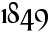

|
OMBÉLINE DIONNE
MARIE-ANNA'S MATERNAL
GRANDMOTHER
THE
SIXTH GENERATION: GAGNON - DIONNE
Our Gagnon
and Dionne lines join in the sixth
generation.
François Gagnon marries Ombéline Dionne on July 24, 1849, in Rivière-Ouelle.
|
The political
background of the time

|
-
the middle of the 19th century - the beginning of
industrialization, and people moving to the
cities, but also to New England. |
After the upheavals
of the 1837 rebellion, the Canadiens live under the Act
of Union signed in 1840, which created Upper and Lower Canada
(Ontario and Quebec). The members for Lower Canada,
including Louis-Hippolyte La Fontaine, draw a distinction between
the "two peoples", insisting on the French Canadians'
right of prior settlement. One political crisis
follows another. In 1849 the (travelling) parliament
sits in Montréal. The economy is
in a bad way because of English laws on navigation and
free trade that favour the United States rather than
Canada. Tension between the English and the French
is at its height when the government passes a bill
to compensate French Canadians for losses suffered during
the troubles of 1837-1838. Members of parliament are even
physically attacked, and the Parliament of the
Province of Canada is burned down on April 25, 1849. The riots
go on for part of the summer.
Then comes a surge of
annexationist feeling, that is, for the union of all the English
colonies in America. The political instability of the Union
regime, the push westward, helped along by the coming
of the railway, and the threat of invasion by an American group
of Irish origin, which even made an armed incursion
at the border in 1866 and spread war fever
through the country, paved the way for the British North
America Act signed in 1867. The English colonies
had to unite in the face of the United States to keep their
identity and their independence.
source: Histoire populaire du
Québec, Jacques Lacoursière.
|
|
SOCIAL
BACKGROUND
In 1849 the
Canadiens are well rooted in the colony, which had been English
for nearly a hundred years. Their houses and ways of life
are well suited to the harsh land. They are fighting to
keep their language and their religion, but are also subject to
English and American influences. There has been no contact
with France since the defeat; no French ship has
sailed the river since. Most
Canadiens no longer see themselves in that mother country, which
had gone through a bloody revolution, become anticlerical,
and, again in 1848, gone through another revolution that would lead it
to the Second Empire in 1850.
|
|
Cornelius Krieghoff (1815-1872), from Holland,
came to Canada in 1840. He settled in Montréal in 1846 and began to paint
what he saw. He is known as a painter of rural
scenes, capturing the details of life in a harsh climate: land clearing, travel...
Today his work is an important and eloquent record of Canada's heritage, especially that of
Quebec.
|
|
|
 When they
married in the summer of 1849, François
and Ombéline were far from the Montréal riots, but they surely heard
echoes of the political turmoil. They married in
Rivière-Ouelle, but their
first child was born in 1850 at Ste-Anne de la Pocatière,
their fifth in 1855 at Trois-Pistoles,
and their twelfth in 1865 at St-Pacôme. When they
married in the summer of 1849, François
and Ombéline were far from the Montréal riots, but they surely heard
echoes of the political turmoil. They married in
Rivière-Ouelle, but their
first child was born in 1850 at Ste-Anne de la Pocatière,
their fifth in 1855 at Trois-Pistoles,
and their twelfth in 1865 at St-Pacôme.
The family moved several times, probably following the father's
work.
Was he a farmer, a forest worker,
a merchant...?
Ombéline died in 1874 and François in
1896.

|
|
THE SEVENTH
GENERATION LEAVES THE BAS DU FLEUVE |
|
François Gagnon and Ombéline Dionne had
fourteen children, and all of them followed the pattern of their time, when people
moved to the cities. All the children left their native
region for Montréal, Chicoutimi or another town. From
this seventh generation on, this line no longer has any tie with the Bas du
Fleuve.
|
- FRANÇOIS, baptized on May 20, 1850, at
Ste-Anne de la Pocatière. Died on March 6, 1920, in
St-Hyacinthe.
- JOSEPH, baptized on September 1, 1851,
at Ste-Anne de la Pocatière. Married Zénobie Morin in
1874, then Louise Tremblay in 1882. Died in Chicoutimi
on June 10, 1924.
- LÉONTINE, baptized on March 9, 1853, at
Ste-Anne de la Pocatière. Married Napoléon Morin on October
7, 1873. Died in Chicoutimi on August 24, 1930.
- CHARLES, baptized on May 21, 1854, at
Ste-Anne de la Pocatière. Married Sophie Sirois on May
9, 1887. Died in Montréal on April 23, 1932.
- JUSTINE, baptized on September 12,
1855, in Trois-Pistoles. Married Eugène Morin, then
Arthur Breton. Died in Montréal on January 1, 1935.
- HENRIETTE, baptized on January 6, 1857,
in Trois-Pistoles. Married Jean-Baptiste Daigneault.
Died in Montréal on March 12, 1942.
- OBÉLINE, baptized on March 14, 1858, in
Trois-Pistoles. Married Joseph Langlois in 1880.
Died in Disraéli (Beauce) on November 20, 1938.
- MARIE-LOUISE-CÉSARINE, baptized on
July 14, 1859, in Trois-Pistoles. Married Wilfrid Morin on
April 18, 1882. Died in Chicoutimi on February 19, 1940.
- PIERRE-ALPHONSE, baptized on February
22, 1861, in Trois-Pistoles. Married Alice Leclerc in
1889. Died in Quebec City on March 9, 1936.
- JOSEPH-HORACE, baptized on August 12,
1862, in Trois-Pistoles. Married Justine Lévesque on April
20, 1885. Died in Chicoutimi on April 15, 1919.
- ARTHÉMISE, baptized on February 21,
1864, in Trois-Pistoles. Married Xavier Morin on May 29,
1882. Died in Chicoutimi on May 18, 1912.
- MARIE, baptized on October 1, 1865, in
St-Pacôme. Married Salomon Bédard in 1886. Died in Montréal on September 12, 1928.
- CÉLINA, baptized on October 1, 1867,
in St-Pacôme. Married Elzéar Lapointe.
- ALPHONSINE,
baptized on August 25, 1869, in St-Pacôme. Married Arthur
Caron, then Zénon Laframboise. Died in Montréal on
October 12, 1929.


|
|